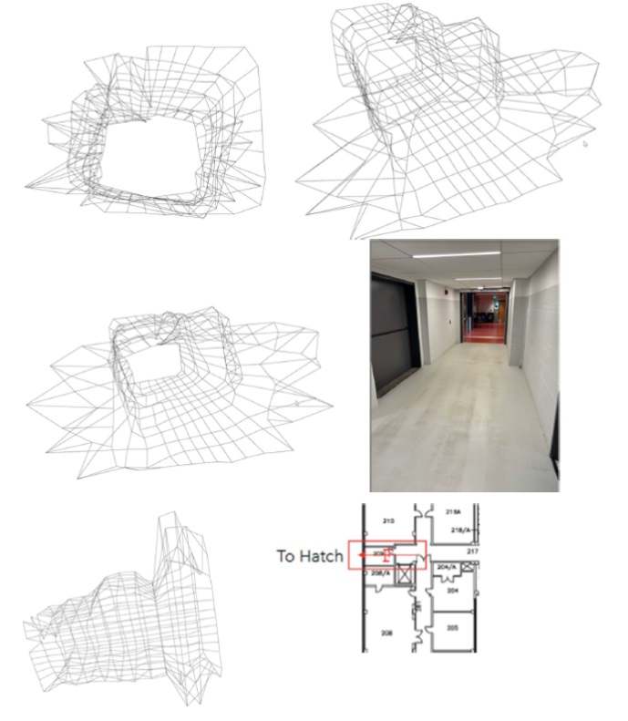

Room Visualizer Light - Advanced 3D Mapping System
Project Overview
Introduction:
- Title: RoomVisualizer Light
- Duration: March 2024 - April 2024
- Role: Project Engineer
- Technologies Used: LiDAR Technology, Texas Instruments MSP432E401Y Microcontroller, Python, Open3d, UART, I2C
Summary:
Developed an advanced 3D room mapping system utilizing LiDAR technology integrated with a high-performance microcontroller. This project showcases the ability to translate complex spatial data into accessible 3D visualizations for real-world applications, emphasizing innovation in spatial analysis.
Objectives:
- Precision Mapping: Utilize LiDAR technology for precise distance measurements and spatial analysis.
- System Integration: Seamlessly integrate hardware and software components for robust data handling and visualization.
- User Interface: Develop a user-friendly interface for real-time interaction with the 3D room data.
- Communication Efficiency: Implement sophisticated communication protocols to enhance system responsiveness and reliability.
Technologies and Tools:
- Microcontroller: Texas Instruments MSP432E401Y - 32-bit ARM Cortex-M4F
- Programming Languages: C (system control), Python (data visualization)
- Software & Libraries: KEIL MicroVision (IDE), Open3d, PySerial
- Protocols: I2C (sensor interfacing), UART (PC communication)
Project Achievements
- Innovative Mapping Solution First-of-its-kind integration of LiDAR with ARM Cortex-M4F based microcontroller for indoor mapping.
- Real-Time Data Processing: Enabled real-time processing and visualization of complex spatial data.
- Enhanced Data Transmission: Optimized UART and I2C protocols to ensure fast and accurate data transmission.
Gallery/Visuals
Challenges and Solutions
- Challenge: Integration of real-time data processing with 3D visualization.
- Solution: Customized data handling scripts in Python to synchronize with the microcontroller's output, ensuring seamless visualization.
- Challenge: Maintaining accuracy in variable lighting conditions.
- Solutions: Implemented calibration protocols within the sensor’s firmware to adjust readings dynamically based on environmental factors.
Future Directions
- Expand Application Scope: Explore applications in architectural planning and emergency evacuation simulations.
- Improve Resolution: Enhance sensor resolution and scanning speed to capture finer details and increase mapping speed.